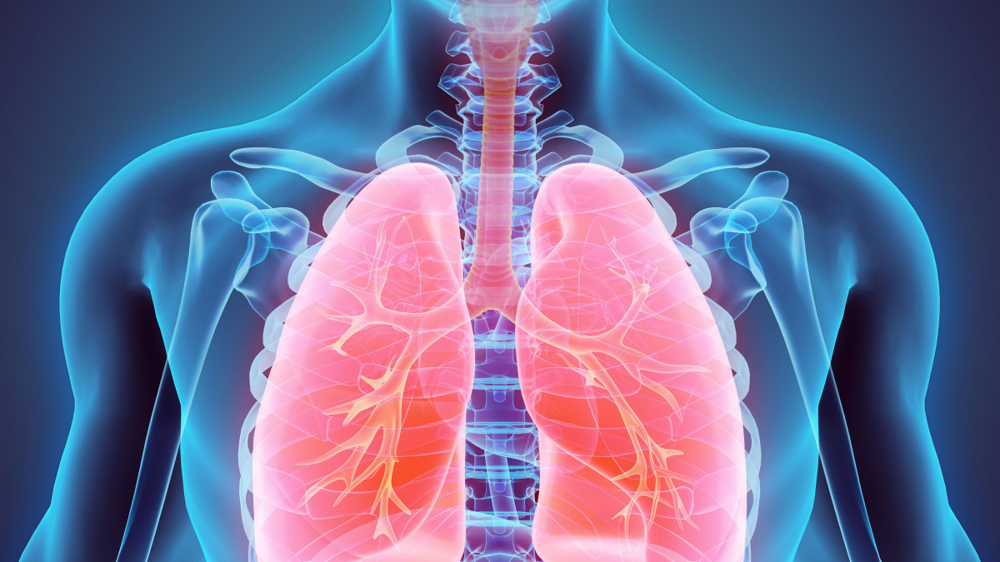

Les poumons permettent l'échange de gaz, en absorbant l'oxygène de l'air et en expulsant le dioxyde de carbone.
La bronchite est une inflammation des bronches, les tubes qui transportent l'air vers et depuis les poumons.
Elle peut être aiguë ou chronique. La bronchite aiguë est souvent causée par des infections virales et se manifeste par une toux persistante, parfois accompagnée de mucus, de fièvre légère et d'essoufflement.
La bronchite chronique, quant à elle, est souvent liée au tabagisme ou à l'exposition à des irritants et se caractérise par une toux productive qui dure plusieurs mois.